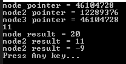

こんにちは。明月です。
この投稿はC#のOperator(演算子)のオーバーロードを使い方に関する説明です。
C#でOperator(演算子)とは足す(+)、引く(-)の記号です。
link - [C#] 6. 演算子
どのプログラムを学んでも始めにみることは演算子じゃないかと思います。
そしてオーバーロード(overrode)の意味はプログラムで再定義という意味です。
link - [C#] 13. クラスの継承と再定義(override)する方法、overrideとnewの差異
つまり、Operator(演算子)オーバーロードというのは演算子を再定義という意味です。すなわち、我々が使っている足す(+)や引く(-)を単純に数字演算だけではなく、別の処理で再定義することができる意味です。
using System;
namespace Example
{
// 例クラス
class Node
{
// データプロパティ
public int Data
{
get; set;
}
// コンストラクタ
public Node(int data)
{
this.Data = data;
}
// 演算子を足す(+)再定義 -> 一つのNodeインスタンスに+を使う場合
public static Node operator +(Node a)
{
// インスタンス生成(プロパティの値は同じだが、インスタンスが別のクラス)
return new Node(a.Data);
}
// 演算子を足す(+)再定義 -> +の演算子に前と後にNodeインスタンスが配置された場合。
public static Node operator +(Node a, Node b)
{
// 演算子の前、インスタンスのData値の後、インスタンスのDataを足す。
a.Data = a.Data + b.Data;
// インスタンスをリターン
return a;
}
// 演算子の増加(++)再定義 -> 前置、後置とは関係ない。
public static Node operator ++(Node a)
{
// 新しいインスタンスを生成すれば受けたData値を1増加する。
return new Node(a.Data + 1);
}
// Operator(演算子)の再定義(override)は匿名関数で設定可能
// 新しいインスタンスを生成してData値を引く。(参考、足す(+)のはインスタンス生成ではないけど、引く(-)のはインスタンス生成だ。)
public static Node operator -(Node a, Node b) => new Node(a.Data - b.Data);
// 暗黙的型変換（暗黙のは、強制キャストしなくても変換される。）
public static implicit operator int(Node node)
{
// nodeインスタンスのData値をリターンする。
return node.Data;
}
// 明示的型変換(明示的は強制キャストをしなければならない)
public static explicit operator Node(int data)
{
// intタイプの値をnodeインスタンスを生成してリターンする。
return new Node(data);
}
// ObjectクラスのToString関数を再定義
public override String ToString()
{
// Data値をString値でリターン
return Data.ToString();
}
}
class Program
{
// 実行関数
static void Main(string[] args)
{
// Nodeクラスの明示的型変換によりexplicit operator Nodeが呼び出す。インスタンスが生成する。
Node node = (Node)10;
// Nodeクラスの暗黙的型変換によりimplicit operator intが呼び出す。intタイプでData値がリターンする。
int data = node;
// operator + 新しいインスタンス生成
Node node2 = +node;
// operator + nodeのインスタンスにnode2の値を足す。
// node와 node3은 같은 인스턴스
var node3 = node + node2;
// インスタンスのアドレス値を出力
Console.WriteLine("node pointer = " + node.GetHashCode());
// node2は新しいインスタンスが生成したので、他のインスタンスのアドレス値
Console.WriteLine("node2 pointer = " + node2.GetHashCode());
// node3はnodeインスタンスのアドレス値をコピーしたのでnodeとアドレスの値が同じ
Console.WriteLine("node3 pointer = " + node3.GetHashCode());
// 演算子の増加(++)再定義、新しいインスタンスが出力されるのでnode2は影響がない
Console.WriteLine((++node2).Data);
// nodeインスタンスのToString
Console.WriteLine("node result = " + node);
// node2インスタンスのToString
Console.WriteLine("node2 result = " + node2);
// node2には新しいインスタンスが生成され既存のnode2.Dataにnode.Dataを引く。
node2 -= node;
// コンソールに出力
Console.WriteLine("node2 result = " + node2);
// 任意のキーを押してください
Console.WriteLine("Press Any key...");
Console.ReadLine();
}
}
}

上の例が演算子の再定義です。
既存の定数タイプ(int)と実数タイプ(float)には足す(+)や引く(-)を入れたら四則演算になりますが、クラスには上みたいに再定義して使ったらコードステップを減らす効果があります。
この演算記号はすべて記号が再定義することではありません。
link - https://docs.microsoft.com/
| 演算子 | 説明 |
|---|---|
| +x, -x, !x, ~x, ++, --, true, false | パラメータが一つの演算子として、再定義が可能です。ここでtrue、falseは二つを同時に定義しなければならないoperatorとしてboolタイプで暗黙的型変換で可能な再定義です。 |
| x + y, x - y, x * y, x / y, x % y, x & y, x | y, x ^ y, x << y, x >> y, x == y, x != y, x < y, x > y, x <= y, x >= y | パラメータが二つの演算子として、再定義が可能です。 |
| x && y, x || y | 再定義不可、true、falseの再定義で認識する。 |
| a[i], a?[i] | 演算子の再定義ではないインデクサーで認識する。 |
| (T)x | タイプ変更の再定義、explicit明示的、implicit暗黙的 |
| +=, -=, *=, /=, %=, &=, |=, ^=, <<=, >>= | 再定義不可、ただ、パラメータが二つの演算子再定義で実行して代入する。 |
| ^x, x = y, x.y, x?.y, c ? t : f, x ?? y, x ??= y, x..y, x->y, =>, f(x), as, await, checked, unchecked, default, delegate, is, nameof, new, sizeof, stackalloc, switch, typeof, with | 再定義不可 |
上の表を参照して演算子再定義ができます。
実務では演算子再定義をよくしません。以前のC++言語には前処理文で様々なマクロを作るためによく使ったと思いますが、C#にはよく使いません。
多分、可読性の問題ではないかと思います。演算子を再定義して使ったら、後でソースを解析する時には暗号化になることではないかと思います。
例えば、+演算子で引く演算を入れて、-演算子に足す演算を入れたら、ただ、記号では+、-だけ見えることでは足す、引くのが迷ってしまうではないかと思います。そのように実装する人ではなさそうですが。
ここまでC#のOperator(演算子)のオーバーロードを使い方に関する説明でした。
ご不明なところや間違いところがあればコメントしてください。
- [C#] 56. 値の初期化及び基本データ値(default)を設定する方法、そして原始データのnull処理、?と??の使い方2021/10/21 18:54:41
- [C#] 55.namespaceとusing、そしてpartialの使い方2021/10/21 18:51:39
- [C#] 54. Reflection機能を使い方 - Attribute2021/10/20 19:29:31
- [C#] 53. Reflection機能を使い方 - Propertyとevent2021/10/19 21:02:58
- [C#] 52. Reflection機能を使い方 - Variable2021/10/15 19:27:37
- [C#] 51. Reflection機能を使い方 - Method2021/10/14 18:34:21
- [C#] 50. Reflection機能を使い方 - Class2021/10/13 18:34:13
- [C#] 49. Operator(演算子)のオーバーロードを使い方2021/10/12 18:28:42
- [C#] 48. IEnumerableとIEnumerator、そしてyieldキーワード2021/10/11 19:49:33
- [C#] 47. Nugetを使い方(外部ライブラリ)とデータベース(MariaDB(Mysql))を使い方、そしてトランザクション(Transaction)2021/10/08 18:58:57
- [C#] 46. データベース(MSSQL)に接続する方法2021/10/07 18:39:58
- [C#] 45. ネットワークソケット通信(Socket)を使い方2021/10/06 19:06:25
- [C#] 44. ファイル(FileInfo)とディレクトリ(DirectoryInfo)を扱い2021/10/05 19:29:34
- [C#] 43. ストリーム(Stream)とバイナリ(byte[])、エンコード(Encoding)、そしてusingを使い方とIDisposableインターフェース2021/10/04 18:33:04
- [C#] 42. ファイルを扱い(IO)とファイルメタデータ(FileInfo)を使い方2021/10/01 20:10:21
- [Java] 59. Spring bootのJPAでEntityManagerを使い方2022/02/25 18:27:48
- [Java] 58. EclipseでSpring bootのJPAを設定する方法2022/02/23 18:11:10
- [Java] 57. EclipseでSpring bootを設定する方法2022/02/22 19:04:49
- [Python] Redisデータベースに接続して使い方2022/02/21 18:23:49
- [Java] Redisデータベースを接続して使い方(Jedisライブラリ)2022/02/16 18:13:17
- [C#] Redisのデータベースを接続して使い方2022/02/15 18:46:09
- [CentOS] Redisデータベースをインストールする方法とコマンドを使い方2022/02/14 18:33:07
- [Design pattern] 3-6. ステートパターン(State pattern)2021/11/17 20:04:47
- [Design pattern] 3-5. メメントパターン(Memento pattern)2021/11/16 20:01:36
- [Design pattern] 3-4. イテレータパターン(Iterator pattern)2021/11/15 19:31:28
- [CentOS] Linux環境(CentOS)でCassandra(NoSQL DB)をインストールする方法(DBeaverブラウザでNoSQL使い方)2021/11/12 17:33:58
- [Design pattern] 3-3. コマンドパターン(Command pattern)2021/11/05 17:01:42
- [Window] apache-tomcatでロードバランシング(Load balancing)する方法とセッションクラスタリング（セッション共有）2021/11/05 16:58:45
- [Window] Apacheでmod_jkとmod_proxyの差異、apacheでtomcatのwebsocketのプロキシフォーワードする方法2021/11/05 16:55:05
- [PHP] Apache環境の同じホスト中でPHPとJava(Servlet)を同時に起動、運用する方法2021/11/05 16:52:04